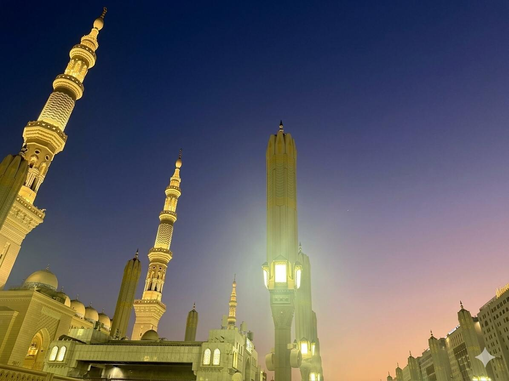

Medina, Summer 2026
I spent this summer in the blessed city of the Prophet Muhammed ﷺ — Medina al-Munawarrah. For five weeks I kept the company of other souls in the common pursuit of realizing the full extent of the blessings Medina might hold for us. I sat through daily Arabic lectures practicing fluency in the Arabic language. I prayed in the holy Masjid an-Nabawwi every day. I witnessed my teachers nurture their own relationship with their Lord. Spending the summer in Medina was as miraculous as one might imagine — maybe even more than one might imagine. Even with all of the miraculousness, I’m still trying to understand what I left with.When I arrived in Medina I set my intention that this would be a month in which I deepened my connection with Allah and nourished my love of the Prophet Muhammed ﷺ. That intention was about the extent of what I could control, from there the month unfolded in ways I could not encompass. I had hopes of performing certain forms of ibada in every free moment. But the free moments never came and so said forms of ibada escaped me. I sat to connect with my Lord in the ways I felt were best. But I was given advice on how to spend my time, so I connected with my Lord in ways that were not of my choosing. Typically, I volunteer myself for support roles; however, on this trip I borrowed from my backpacking adventures [[Learning to Backpack Summer 2026]] embracing a new perspective on leadership that left me disattached to the idea seeking influence. Still I found myself with neither the influence of leadership nor the ~~responsibility of service~~ freedom of followership. I was somewhere in between, busy with necessary work I wasn’t seeking.
In so many ways Medina was not what I expected. And I think that is part of my learnings. This opportunity to surrender my grasp of things, to lay aside my intellectual assessment of the situational, and choose belief. Right after setting my intentions to leave Medina with a closer connection to Allah and a more profound love of the Prophet ﷺ, I quieted the fear that I might not realize these in time by reminding myself: *My Lord would not arrange the universe for me to be in Medina, then allow me to leave the city empty-handed. A caring Lord would not do that. And my Lord is caring.*
The Journey before the journey (The lead-up to Medina)
*SPIRITUALLY*
This summer intensive in Medina comes at the tail-end of a life-changing year at Tayseer [[My Tayseer experience]], and in the midst of my own internal journey of self-improvement. When one is faced with an opportunity to spend weeks in one of the holiest places on earth, it is natural to wonder: Am I worthy?. It’s impossible to answer such a question. Moreover, we are never *deserving* of the gifts God chooses to bestow on us. That said, my year at Tayseer called upon me to remember Allah constantly in my studies and my free time, it elevated my standard of what a day’s worship entails, it kept me in the company of people wholly invested in traveling nearer to Allah. There are no accidents in divine wisdom and I see little coincidence that God would be put me through a year of spiritual conditioning on the eve of this blessed opportunity to be in Medina.
Concurrent with my Tayseer experience, I found myself thinking deeply about my fears and the ways I understand the world. My decades of test-taking and navigating excellence as defined by academia stoked in me an innate over-achiever’s mentally. I’m always busy with something or in pursuit of a new project to involve myself in. I reflected recently that, for me, this comes from a fear that I might be worthless in the absence of constant achievement. Worse yet, I uncovered in myself a fear that my well-intended actions might amount to nothing if I wasn’t supremely careful in how I performed them. This is relevant to Medina because at the root of these fears is a misconception of who God is. My fears helped me to realize that even though I had always believed in God, maybe I misunderstood God to be discerning but not merciful. Discerning enough to know every small detail of my actions and of the universe. Yet not merciful enough to overlook the flaws He sees. In this too was a preparation. God was helping me to better see him just as I set out to travel to the holiest cities to better worship him.
*LOGISTICALLY*
God tended to the condition of my heart and mind in preparation for the journey. What remained unaddressed was the condition of my wallet. This too God would arrange. The biggest obstacle here was that my wife and I had burned through any leisure budget in our trip to [[trip to India and Mecca]] a few months prior. We made a commitment to be present for one of my wife’s closest friends, and thus made peace that international travel was out of the question for the rest of the year………but a few months later the gears started turning in my mind. Around late March, someone mentioned an annual Tayseer 1-month Arabic intensive in Turkey and I thought: “wouldn’t it be wild to do something like that”? A few weeks pass and I find myself mourning a beautiful Tayseer experience that is nearing the finish line. Mentally I’m grasping at ideas that might help me prolong this bliss. Then the announcement comes that this year’s 1 month Arabic program will be hosted in Al-Medina al-Munawwarah! I think my wife was immediately committed to making trip once she heard this. There is something special about the way Sudanese culture adores the holy cities. For many of the American-Sudanese people I’ve met visiting Mecca and Medina is something one does often no matter what, the money will figure itself out. I didn’t grow up with this same perception, still there is truth to it. At one moment I found myself weighing the potential once-in-a-lifetime opportunity of spending 1 month in Medina(for the same approx cost of doing Umrah) against the very real responsibility to sustain my family on a dwindling savings. The next moment I find myself battling my pride because a family member heard about the Medina Arabic program and decided to sponsor us. Through this and other unexplainable events, the money had figured itself out.
Medina here we come!
The Journey Itself (Our time in Medina)
Our time in Medina came with layered intentions and it could be said that any one of these purposes alone would justify the trip. We spent hours learning Arabic, evenings worshipping in masjid Nabawi, weekends exploring the meaningful sites of Medina, and we spent time performing Umrah.
##### Arabic Class
The impetus for the trip was to embrace an opportunity to immersively study Arabic. In just 5 weeks students throughout the program noticeably improved their fluency in speaking formal Arabic(FusHa). I myself came away with solid practice in Arabic storytelling and proof that I could understand FusHa pretty well(my professor lectured in only Arabic!). I also just had a good time in class.
We spent 4 hours in class everyday: reading, listening, writing, and speaking. Our group was split into 3 class levels. My wife and I tested into level 3, the most advanced level offered this summer. As impressive as that sounds, it also indicates some of the complexity of Arabic pedagogy. My wife is a native speaker who only speaks dialectal Arabic, and my knowledge of Arabic is almost entirely academic. The difference between formal and dialectal is not quite night and day, but they are still quite different. We represent the larger class 3 in that way: half heritage dialectal speakers, half formal Arabic academics. All of us in pursuit of fluency with formal Arabic. Where she might know how to communicate an idea but struggle to use formal language, I might know the appropriate formal vocabulary and struggle to fluidly convey my idea.
In level 3, we focused on exposure then drill & practice. We read stories in Arabic, identified new vocabulary and defined the new Arabic words with other Arabic words. Then we extemporized responding to questions about the passages or about our own life experience. Learning to speak a language is embarrassing and humbling. It’s like being a toddler all over again. Embracing that embarrassment brought us together as a class, so much so we spent a lot of class time laughing at each other and laughing at ourselves. It helps that all the people in my class(teacher included) were awesome to begin with!
##### Time in the Masjid
My favorite part of Medina was our time spent in the Masjid. Every day we sat together. Most days we prayed our extra Sunnah prayers post-Maghrib individually then sat quietly doing our own dhikr until the adhan of ishaa. Some days we might spend the whole time in dua or reading Quran. There were a few occasions where sat together and read from the Shamai’l of the Prophet ﷺ—those were a real treat.
Our teacher insisted that we be in the Masjid from Maghrib to Ishaa everyday. This insistence alone elevated the entire experience of the trip. Our living accommodations were ~15minute drive from the Haram(in Medina this means Masjid an-Nabawi), so after the first week of zeal and excitement there were days where laziness or fatigue might seek to overcome. But we showed up. Some days we were so tired that even though we intended to do extra dhikr between the prayers we ended up napping on the carpet. Nevertheless, each day was a reminder of the spiritual significance of the collective. In moments when my own nafs might have persuaded me to lessen my worship, I could look around me and see my friends exerting themselves in their own worship. If they could do it, I could certainly try. I could also look over and see my teachers similarly engaged in dhikr or reading Quran or praying Sunnah. They too had a relationship with Allah to nurture. I could see with my own eyes how the (spiritual) work they guided me to was a work they themselves had been engaged in for years.
Every one showed up for Maghrib. There was a more select crew for Fajr. Our schedules were demanding so making the trip to the Haram for Fajr almost certainly meant sacrificing precious sleep. However, on days when I made the sacrifice the sleep lost was never missed. For Fajr the routine was almost the same. We prayed Sunnah’s beforehand, prayed the prayer, then we sat together off to the side doing morning adhkar and salawat until sunrise. From then we all walk over to the part of the masjid where you find the grave of the Prophet Muhammed ﷺ, Abu-Bakr As-Siddeeq (RA), and Umar ibn Al-Khattab (RA). We offered our Salaams and made dua for our beloved Prophet ﷺ and spoke time. In a Hadith the Prophet ﷺ says ~(the people in the graves can hear you clearly). Afterwards we prayed Salat al-duha then went back to the hotel/apartments to get ready for class. You can’t find a better way to start your day.
##### Weekend Side quests
Our university hosts hosted us with excellence. So many of the world’s cultures hold hospitality in high esteem. African-American culture extends to the definition of family and hold sacred one’s invitation to the “cookout.” Caribbean-American households must always maintain the living room in pristine order in anticipation of guests. Sudanese households set out tea during a certain time of day to receive anyone and anybody who would like to visit. Our hosts in Saudia carried the same reverance for being gracious hosts. The teaching staff and administrators at Prince Mughrin reserved our accommodations, they arranged bus to take us to school and to the Haram, and above all that they took us on trips on the weekend!
To name a few weekend excursions we visited: The historic battlegrounds of Uhud, The battleground and the nearby gravesite for the martyrs of Badr, The sand dunes besides the mountain of the angels(where the angels descended to fight alongside the Muslims in Badr), The Calligraphy center of Medina (where the the artist who penned the design for the Kaaba cloth is in residence), The museum of creation (that discusses the history of creation and of the Prophets), The museum about the Prophet Muhammed ﷺ specifically, Jabal Ayr(fun fact: I was blessed to call the adhan on Jabal Ayr, within the boundaries of the Haram), The seven mosques masjid related to the battle of ditch, Biir Maun, Well of the ring, the factory where the Mushafs of Medina are manufactured, and more.
I’m certain that we were shown the best parts and some of the most exclusive parts of Medina. In the midst of the experience, I felt like a diplomat. I don’t think dignitaries even get an experience of Medina as thorough and adventurous as what we experienced. May Allah reward our hosts for their excellence. (May Allah reward our teachers for being present, bringing us to Medina, and for facilitating the journey)
##### Umrah
Umrah is always a blessing. For me, performing Umrah in the context of a 1-month stay in Medina made Umrah extra special. I was blessed to perform Umrah years prior to signing up for this program. As it is with most Umrah packages from the United States: I spent a few days in Medina, a few days in Mecca, and I was guided through the rites of Umrah. It was beautiful. However, what made this Umrah different is I was settled. We performed Umrah in week 3 of the program, so I had acclimated to life in Medina. I had arrived at a sense of home of away from home, perhaps. As such, performing Umrah this time around was a journey of a 3 hour bus ride rather than a 12 hour flight. I was a traveler by Islamic legalistic definitions, yet I wasn’t so far removed from my sense of home.

The spiritual significance of Umrah does not diminish, meanwhile I had a deeper sense of familiarity and normalcy in the midst of the experience. Growing up, I learned to see Umrah as superfluous. The thinking was: Money is limited, Hajj is required of every able Muslim, save your money for Hajj. Moreover, Hajj remained this distant achievement that we might spend the rest of our lives pursuing. To travel for Umrah before doing Hajj felt like jeopardizing that once in a life shot to save enough for Hajj, and there was never any room to consider what might exist after making Hajj. The familiarity I felt in performing this most recent Umrah juxtaposed with the sense of impossibility I once attached to Umrah reminds me of God’s miraculousness. Only God could deliver me the impossible and then make the impossible familiar. Only God. All praise is due to Allah.
After the Journey(What are the tools/gifts I carry forward from this experience?)
Leaving Medina was a jarring experience. The city for whom my love had evolved from the reverential into the familiar, I now needed to leave. My wife and I made plans to extend our travel abroad and visit family [[visiting family-Saudi and London]], however, there was much coordination involved there. The pace with which I was shifted from a state of presence to a headspace of logistics saddened me. It was as if the peace of Medina was leaving me before I had yet gone beyond the city limits.
What was harder still was the difficulty I faced trying to distill what it was I would carrying home with me to Medina. From the outset of the trip I surrendered my attempts to control my experience—that includes identifying along the way what my gems would be—and I poured everything I had into being present in each moment. As the final moments of the trip came upon me I felt I was grasping at amorphous feelings and ideas, which in there abstractness would hardly stand the test of time. I was rocked. It seemed to me that I surrendered control and I was rewarded with ambiguity. I see now that my takeaway was the surrender itself.
My Medina experience had called upon me to surrender expectations, my ego , and my intellect. In Arabic class, I had to put aside my expectations for what lecture would look like so that I could immerse myself in developing my speaking fluency. In the masjid, I had to put aside my pride to better receive the direction I was getting from my teachers. In my experience as a whole, I had to put aside concept of tangible benefit in favor of an understanding my Lord would not bring my to the holiest of places(both Mecca and Medina) and then send me away empty handed. He would not do that. Because, the God I choose to believe in is caring and He cares about me in particular.
Lastly, in this present, I must put aside the need to fully comprehend. As much as I would love to have clearly defined list of takeaways from Medina, I must admit I do not. As my teacher tells us, the right answer to that question of what we bring back from Medina is “we brought back with us Rasulallah ﷺ.” I desperately want that to be true for me. I just dont know. I do know, I got to work out my muscle of surrender. And alhamdulilah for that.